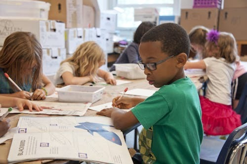

Educación
Entregamos kits escolares, acompañamiento en tareas y talleres de lectura y tecnología para que más chicos puedan sostener su trayectoria educativa.
Cada peso se transforma en acciones concretas en cuatro ejes de trabajo.
Entregamos kits escolares, acompañamiento en tareas y talleres de lectura y tecnología para que más chicos puedan sostener su trayectoria educativa.
Apoyamos comedores y merenderos con viandas diarias y meriendas reforzadas, garantizando al menos un plato de comida caliente por día.

Organizamos jornadas de controles pediátricos, vacunación y talleres de salud e higiene en articulación con centros de salud locales.
Creamos espacios de juego, escucha y acompañamiento para niños y familias, fortaleciendo vínculos y redes comunitarias.
Ejemplos concretos donde tu donación se convierte en oportunidades.
Brindamos almuerzos y meriendas a más de 80 niños por día en un comedor comunitario del sur de Buenos Aires. Complementamos la alimentación escolar y acompañamos a las familias en la planificación de menús nutritivos.
Un equipo de docentes y voluntarios recorre barrios con materiales didácticos, libros y laptops para reforzar lectura, escritura y habilidades digitales para niñas y niños en edad escolar.
Con solo $15.000 ARS asegurás un día de comida y apoyo escolar para un grupo de niños.